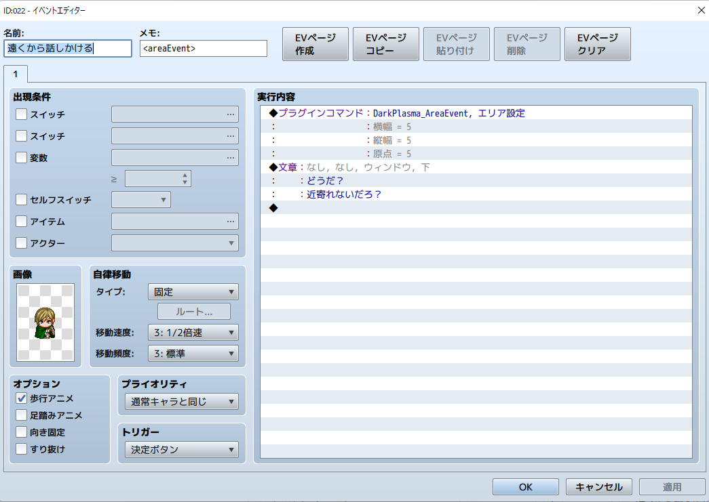

イベントのページごとに当たり判定を拡張する
概要イベントのページごとに当たり判定を矩形で拡張します。 使用例対象キャラクターを中心に5x5マスの矩形となるよう、当たり判定を拡張する設定です。 類似プラグインNUUN_EventRange.jsメモ欄のみで指定するためページごとに範囲を変えることができません。矩形のみでなく、ひし形や円形、三角形に近似した範囲を設定できます。 ダウンロードリンクGitHubRawボタンを右クリックして対象をファイルに保存してください。
Read more
複数のピクチャを同時に消去する
概要指定した範囲のIDのピクチャを同時に消去するプラグインコマンドを提供します。 使用例 ダウンロードリンクGitHubRawボタンを右クリックして対象をファイルに保存してください。
Read more